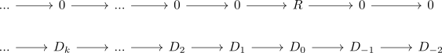
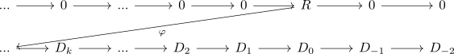

chain of elements and hom chain complex for RMod
Proposition
Let $R$ be a ring, $\mathrm{RMod}$ the category RMod and $\mathrm{Ch_*}(\mathrm{RMod})$ be the category of chain complexes. Then there exists a natural Bijection
\begin{align*}
\underline{\mathrm{Hom}}(R[0],D) \cong (d_n)
\end{align*}
Proof
an k-element in $\underline{\mathrm{Hom}}(R[0], D)$ is given by k- chain map

Since the maps from $0 \rightarrow D_k$ are trivial an k-element is given by a module-homomorphism $\varphi: R \rightarrow D_k$

As $R \rightarrow D_k$ is an element in $\mathrm{Hom}_{\mathrm{RMod}}(R,D_k)$ it corresponds to an element $d_k \in D_k$ (cf. forgetful set functor from RMod as representable functor)